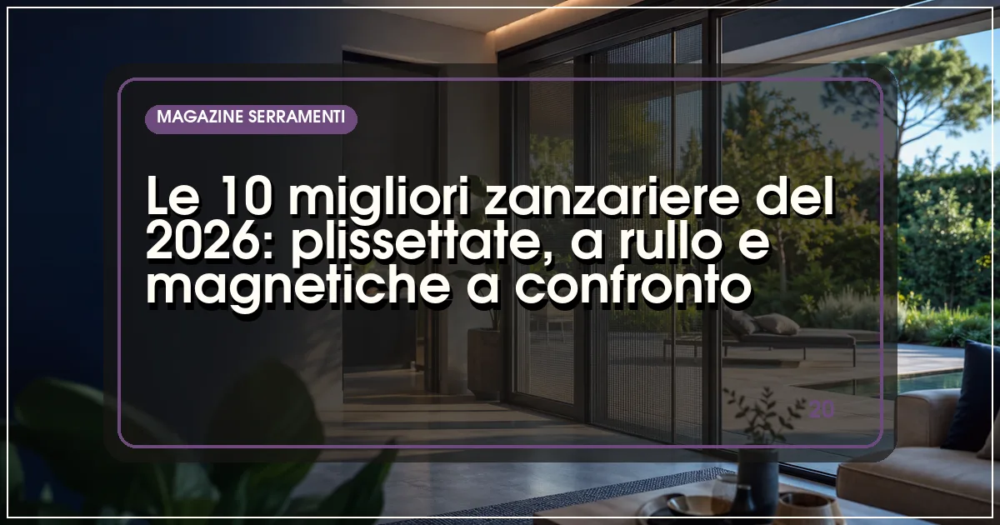

La migliore zanzariera del 2026 è Bettio Scenica, plissettata con guida a pavimento da 4 mm e rete che non si sfila: ideale per portefinestre. Per le finestre, il riferimento è Zanzar con sistema a clic-clac. Prezzi: da 30-60 €/m² (magnetiche) a 150-300 €/m² (plissettate di fascia alta), montaggio escluso.
In sintesi
- Per portefinestre molto usate la scelta migliore è la plissettata: niente molla, guida bassa, apertura che si ferma ovunque.
- Per le finestre il rullo laterale o verticale con molla frenata resta lo standard più economico e durevole.
- Le magnetiche sono la soluzione fai-da-te: 30-60 €/m² ma durata inferiore (3-5 anni).
- Le reti idrorepellenti e antipolline costano il 20-30% in più e valgono la differenza in città.
- Prezzi 2026: da 30 €/m² (magnetiche) a 300 €/m² (plissettate premium o motorizzate), montaggio escluso.

Sembra un accessorio, ma la zanzariera è il serramento più sollecitato della casa: tra maggio e ottobre una zanzariera di portafinestra viene aperta e chiusa anche cento volte al giorno. Ecco perché la differenza tra un prodotto da 50 euro e uno da 200 non è estetica ma meccanica: guide che non si deformano, reti che non si sfilano dalle catenelle, molle che non perdono tensione dopo due estati.
Il mercato 2026 si divide in quattro famiglie: plissettate (rete pieghettata a scorrimento, senza molla), a rullo (avvolgimento verticale o laterale con molla), magnetiche (pannelli con chiusura magnetica, spesso fai-da-te) e fisse o a battente per finestre poco usate. A queste si aggiungono i sistemi motorizzati per grandi vetrate e le reti speciali: antipolline, oscuranti, pet-proof.
Per questa Top 10 abbiamo valutato qualità dei profili in alluminio, resistenza della rete (fibra di vetro, poliestere o alluminio), scorrevolezza, disponibilità di ricambi e prezzo. Per schermare dal sole oltre che dagli insetti, guardate anche la nostra Top 10 delle tende da sole 2026 e la classifica dei Top 5 produttori di zanzariere.
La classifica: le 10 zanzariere del 2026
Bettio Scenica — la plissettata che ha fatto scuola
Il marchio bergamasco ha praticamente inventato la categoria: Scenica è la plissettata di riferimento, con rete pieghettata che scorre senza molla, si ferma in qualsiasi posizione e una guida a pavimento di appena 4 mm che non inciampa e si supera anche in carrozzina. Il sistema anti-sfilamento della rete dalle catenelle laterali è il più affidabile testato, anche con vento forte.
Disponibile per portefinestre singole, doppie e scorrevoli, con reti standard, idrorepellenti e antipolline. Prezzi indicativi 180-300 €/m²: è la fascia alta della categoria, ma la durata attesa supera i 10 anni con ricambi sempre disponibili.
- Nessuna molla: scorrimento morbido e duraturo
- Guida pavimento 4 mm anti-inciampo
- Rete anti-sfilamento anche col vento
- Prezzo tra i più alti
- Montaggio da personale formato consigliato
Zanzar — il rullo verticale più affidabile
Il produttore veneto è specializzato esclusivamente in zanzariere dal 1985: il sistema a rullo verticale con molla frenata e aggancio magnetico di fine corsa è il più solido tra quelli provati sulle finestre. I profili in alluminio verniciato e la rete in fibra di vetro garantiscono anni di utilizzo senza cali di tensione.
Ampia gamma anche di plissettate e di sistemi per porte. Prezzi indicativi 90-180 €/m² per il rullo, 160-280 €/m² per le plissettate. Ottima la disponibilità di ricambi e reti di sostituzione fai-da-te.
- Specialista: produce solo zanzariere
- Molla frenata che non sbatte
- Ricambi facilmente reperibili
- Estetica funzionale più che ricercata
- Rete base non idrorepellente
Pronema — l'innovazione italiana delle reti
Azienda di Padova tra le più innovative del settore: propone plissettate con rete plissettata ad alta resistenza, sistemi scorrevoli per grandi luci e la gamma con rete oscurante che trasforma la zanzariera in una tenda filtrante, utile su vetrate esposte a ovest. La qualità dei tessuti tecnici è il vero punto di forza.
Prezzi indicativi 150-280 €/m². Particolarmente consigliata per chi cerca la combinazione zanzariera + oscuramento in un unico binario, soluzione che sta sostituendo il classico doppio sistema.
- Reti tecniche tra le migliori
- Versioni oscuranti combinate
- Buona per grandi dimensioni
- Rete vendita meno capillare al Sud
- Prezzi medio-alti
MV Line — il rullo made in Italy dal prezzo onesto
Produttore pugliese con un catalogo completo e prezzi tra i più equilibrati: rulli verticali e laterali con cassonetto da 40-50 mm, plissettate e zanzariere a battente per porte. La qualità meccanica è sopra la media della fascia economica, con profili verniciati a polveri e reti in fibra di vetro.
Prezzi indicativi 70-150 €/m² per i rulli, 140-240 €/m² per le plissettate. Molto presente al Centro-Sud con una rete di rivenditori-serramentisti ben distribuita.
- Ottimo rapporto qualità-prezzo
- Catalogo completo
- Forte presenza al Centro-Sud
- Finiture meno ricercate dei top
- Guide pavimento leggermente più alte
SharkNet — la plissettata senza guida a pavimento
Il sistema che ha risolto il problema della guida a terra: la plissettata SharkNet scorre senza alcun profilo a pavimento, eliminando del tutto l'ostacolo — un vantaggio decisivo per anziani, bambini e passaggi con carrelli. La rete resta in tensione grazie a un sistema di catenelle brevettato.
Prezzi indicativi 200-320 €/m². È la soluzione premium per portefinestre di collegamento con terrazzi e giardini, dove il passaggio è continuo e la guida bassa non basta.
- Zero guida a pavimento
- Passaggio totalmente libero
- Sistema brevettato anti-sfilamento
- Prezzo alto
- Installazione specialistica obbligatoria
Palagina — il rullo di precisione toscano
Produttore fiorentino specializzato in sistemi avvolgibili di precisione: i rulli Palagina sono apprezzati per la silenziosità della molla e la cura dei cassonetti, con profili che si integrano bene anche su serramenti di pregio. Prezzi indicativi 100-200 €/m². Buona la gamma di reti speciali, comprese quelle antipolline certificate.
NoFlyStore — il fai-da-te online che funziona
Il primo e-commerce italiano di zanzariere su misura: si ordinano online inserendo le misure, arrivano in kit e si montano con attrezzi comuni in 20-40 minuti. La qualità è sorprendentemente buona per il prezzo (indicativamente 50-120 €/m²), con plissettate e rulli di produzione italiana. Ideale per chi è pratico e vuole risparmiare sul montaggio.
SqualoNet — la scelta intelligente per il fai-da-te rapido
Altro specialista della vendita online, SqualoNet punta su sistemi semplificati: zanzariere a rullo e magnetiche con montaggio a incastro o biadesivo, senza fori sul telaio. Prezzi indicativi 40-100 €/m². La durata è inferiore ai sistemi professionali, ma per affitti e soluzioni temporanee è imbattibile.
Teknika — reti e sistemi per il canale professionale
Marchio apprezzato da serramentisti e rivenditori per la qualità costante dei profili e la precisione delle misure: gamma completa di rulli, plissettate e magnetiche con buone reti in fibra di vetro. Prezzi indicativi 80-160 €/m². Difficile da acquistare come privato, ma se il vostro serramentista la propone, è una scelta sicura.
Arquati — la zanzariera da chi sa di schermature
Chiude la classifica il gruppo piemontese, leader nelle schermature solari, che propone zanzariere a rullo e motorizzate pensate per integrarsi con tende e pergotende: la scelta giusta quando la schermatura fa parte di un progetto completo di outdoor. Prezzi indicativi 120-250 €/m², con versioni motorizzate per grandi vetrate oltre i 400 €/m².
Tabella comparativa: tipologie e prezzi delle 10 zanzariere
| Marchio | Tipologia di punta | Rete | Prezzo indicativo (€/m²) | Ideale per |
|---|---|---|---|---|
| Bettio | Plissettata | Pieghettata idrorepellente | 180–300 | Portefinestre molto usate |
| Zanzar | Rullo verticale | Fibra di vetro | 90–180 | Finestre |
| Pronema | Plissettata / oscurante | Tecnica combinata | 150–280 | Vetrate esposte al sole |
| MV Line | Rullo e plissettata | Fibra di vetro | 70–240 | Rapporto qualità-prezzo |
| SharkNet | Plissettata senza guida | Pieghettata | 200–320 | Passaggi continui |
| Palagina | Rullo di precisione | Fibra di vetro / antipolline | 100–200 | Serramenti di pregio |
| NoFlyStore | Kit su misura online | Fibra di vetro | 50–120 | Fai-da-te |
| SqualoNet | Magnetica / rullo easy | Poliestere | 40–100 | Affitti, soluzioni rapide |
| Teknika | Rullo professionale | Fibra di vetro | 80–160 | Canale serramentisti |
| Arquati | Rullo / motorizzata | Tecnica | 120–400 | Progetti outdoor integrati |
Nota metodologica: i prezzi sono indicativi al metro quadro, rilevati a luglio 2026, montaggio escluso salvo diversa indicazione; le reti speciali (antipolline, pet-proof, oscuranti) comportano un sovrapprezzo del 20-40%.
Come scegliere la zanzariera giusta per ogni apertura
Portefinestre: plissettata, senza esitazioni
Se il varco si attraversa decine di volte al giorno, il rullo laterale con molla invecchia male: la rete si sfila, la molla perde tensione, la guida a pavimento alta inciampa. La plissettata risolve tutto: niente molla, rete che si ferma dove la lasciate, guida da 4-5 mm o assente. Costo superiore, durata doppia.
Finestre: il rullo verticale resta il miglior affare
Per finestre la zanzariera a rullo verticale con molla frenata è imbattibile per prezzo e ingombro. Verificate tre cose: cassonetto non oltre 50 mm, guide con spazzolini antivento, aggancio di fine corsa magnetico o meccanico che non sbatte. La rete in fibra di vetro è lo standard; l'alluminio solo se avete gatti combattivi.
Reti speciali: quando valgono il sovrapprezzo
La rete antipolline (trama fitta certificata) è utile per chi soffre di allergie e tiene le finestre aperte in primavera; la rete idrorepellente si pulisce con un colpo di spugna e conviene in città; la pet-proof in poliestere rinforzato resiste agli artigli. Sovrapprezzi indicativi: 20-40% rispetto alla rete standard.
Quanto costa una zanzariera nel 2026 e come si monta
Prezzi reali, montaggio incluso o escluso
Una zanzariera a rullo per finestra standard (120×160 cm) costa indicativamente 90-180 euro fornita e posata; una plissettata per portafinestra (120×240 cm) tra 250 e 500 euro; le magnetiche fai-da-te scendono a 40-80 euro. Il montaggio professionale incide per 40-80 euro a elemento, ma garantisce misure corrette e registrazione delle guide.
Fai-da-te o professionista?
Le misure sono il punto critico: vanno prese in tre punti per lato e va dichiarato il tipo di telaio. I kit online (NoFlyStore, SqualoNet) funzionano bene su telai standard e squadrati; su serramenti vecchi o fuori squadro il rilievo del professionista evita resi e rifacimenti. Per le plissettate di fascia alta il montaggio specialistico è sempre consigliato.
Domande frequenti sulle zanzariere
Qual è la migliore zanzariera del 2026?
Secondo la classifica Infissi Media 2026, la migliore zanzariera è Bettio Scenica, plissettata con guida a pavimento da 4 mm, senza molla e con rete anti-sfilamento: ideale per portefinestre. Per le finestre, la scelta più affidabile è il rullo verticale Zanzar con molla frenata. Miglior fai-da-te: NoFlyStore.
Meglio zanzariera plissettata o a rullo?
Per le portefinestre molto usate è meglio la plissettata: non ha molla, si ferma in qualsiasi posizione, ha una guida bassa di 4-5 mm e dura oltre 10 anni. Per le finestre il rullo verticale con molla frenata costa la metà e occupa meno spazio, ed è quindi la scelta più razionale.
Quanto costa una zanzariera nel 2026?
Indicativamente: 40-100 €/m² per le magnetiche fai-da-te, 70-180 €/m² per i rulli verticali, 150-320 €/m² per le plissettate, oltre 400 €/m² per le motorizzate da grandi vetrate. Il montaggio professionale aggiunge 40-80 euro a elemento. Le reti speciali antipolline o pet-proof costano il 20-40% in più.
Quanto dura una zanzariera e come si mantiene?
Una zanzariera di qualità dura 8-12 anni; la rete si sostituisce ogni 5-8 anni con un costo indicativo di 30-80 euro. La manutenzione è semplice: pulizia della rete con panno umido o aspiratore a bassa potenza, guide libere da polvere e sporco, nessun lubrificante grasso che attira sporco e blocca lo scorrimento.